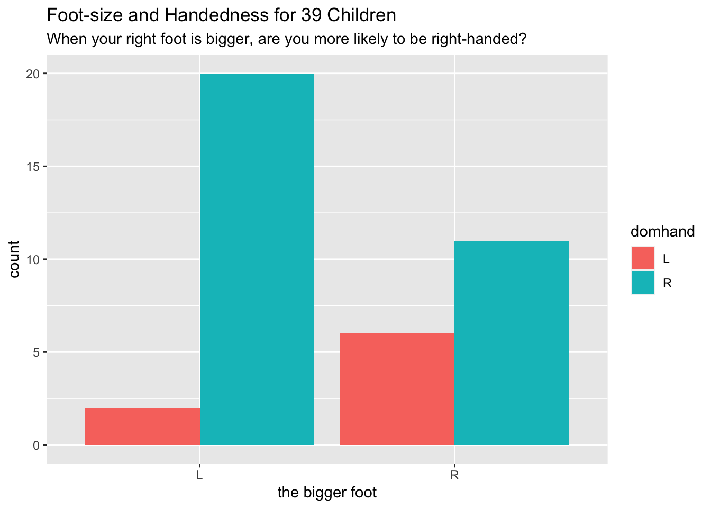

8.2 Implementation in ggplot2
In its syntax, the ggplot2 package attempts to follow the Grammar of Graphics fairly closely. Let’s see how this works by building up, in step-by-step fashion, to our initial graph example—the scatter plot in Figure 8.1.
8.2.1 Basic Setup: the Data Frame
Construction of a graph in ggplot2 begins with the ggplot() function. The first parameter of the function is data, the value of which will be the data frame on which we plan to build the graph.
It is possible call ggplot() with just the data, and indeed it is instructive to do so. The result is seen in Figure 8.13: it is simply a blank window.
ggplot(data = m111survey)
Figure 8.13: A completely blank plot!
8.2.2 More Setup: Establishing the Frame
ggplot() has a second parameter, the parameter mapping. Usually it is assigned the result of a call to the ggplot function aes(), which is used to establish aesthetic mappings. The common procedure is to use this first call to aes() to establish the frame: later calls will map other aesthetics properties to other variables, as desired.
If we want to work toward Figure 8.1, we will have to map x-location to fastest and y-location to GPA. This is accomplished by the following code:
ggplot(data = m111survey,
mapping = aes(x = fastest, y = GPA))Figure 8.14: Just the frame: no glyphs yet!
The result appears as Figure 8.14. A frame has been established, along with guides to ggplot2’s default choice of linear scales for the mappings to fastest and to GPA.
It is worth noting that most programmers do not bother to name the data and mapping parameters. Figure 8.14 could just as well have been produced as follows:
ggplot(m111survey, aes(x = fastest, y = GPA))In the future we will also drop these parameter names.
8.2.3 Labels
At any point we can add labels to our plot. If you are simply exploring data you don’t need labels, but if you are writing up the final version of a report you will want to give careful consideration to labeling axes and to providing a good title (or—if you are able to to do so—a good caption). The following code adds labels for the x and y axes, a title—and even a subtitle, although subtitles are somewhat rare in practice.
ggplot(m111survey, aes(x = fastest, y = GPA)) +
labs(x = "fastest speed ever driven (mph)",
y = "grade point average",
title = "Dunno what to say, yet!",
subtitle = paste0('A title should briefly indicate the main',
' lesson the plot has for us. Instead of:',
' "Scatterplot of\nGPA vs. fastest speed",',
' say something like: "Speed and GPA are',
' not strongly related."'))Figure 8.15: You can always add some labels!
8.2.4 Adding a Type of Glyph
It is high time now to make some data appear on our plot, so let’s add some glyphs. In ggplot2 syntax glyphs are added with functions whose names are of the form:
geom_gylphType()
Thus we have such things as:
geom_point()for points;geom_line()for line segments between points;geom_bar()for the bars of a bar graph;geom_histogram()for the rectangles that make up a histogram;geom_density()for the curve of a density plot;geom_violin()for the violins of a violin plot;geom_jitter()for jittered points representing individual cases;geom_rug()for rug-ticks representing individual cases;- and a number of other
geom’s!
8.2.4.1 Our First Geoms
Let’s add some points to the plot with the following code. The result appears as Figure 8.16. We are now quite close to the target plot.
ggplot(m111survey, aes(x = fastest, y = GPA)) +
geom_point() +
labs(x = "fastest speed ever driven (mph)",
y = "grade point average",
title = "Speed and GPA are not strongly related.")Figure 8.16: Finally: the data appears!
8.2.4.2 Further Aesthetic Mappings
The final step in our first example is to map the color property of points to the variable sex. We do so by a call to aes(). Conventionally a mapping for a glyph is accomplished inside the geom-function that creates the glyph, as in the code below that creates figure 8.17, our target plot:
ggplot(m111survey, aes(x = fastest, y = GPA)) +
geom_point(aes(color = sex)) +
labs(x = "fastest speed ever driven (mph)",
y = "grade point average",
title = "Speed and GPA are not strongly related.",
subtitle = "(But guys tend to drive faster, and to have lower GPAs.)")Figure 8.17: This is the target plot!
Points have other perceptual properties in besides their color. Shape is such a property. (From the point of view of the Grammar of Graphics, a point in itself is only an abstract location in space. Only when it assumes all of its perceptual properties does it actually “appear”, and when it does appear its shape may be other than circular, just as its color may be other than, for instance, black.) Thus alternative way to incorporate sex into the graph would have been to map shape to sex,as in the following code that results in Figure 8.18:
ggplot(m111survey, aes(x = fastest, y = GPA)) +
geom_point(aes(shape = sex)) +
labs(x = "fastest speed ever driven (mph)",
y = "grade point average",
title = "Speed and GPA are not strongly related.",
subtitle = "(But guys tend to drive faster, and to have lower GPAs.)")Figure 8.18: Mapping shape to the variable sex.
Passing now from our scatter plot example, we consider how to achieve another of the plots studied in the previous section, namely Figure 8.3. Following the same logic of calls to ggplot() and a geom-function, we see that the bar graph on sex and seating preference can be obtained by mapping the fill property of bars to seat as seen in the following code (results shown again as Figure `8.19)
ggplot(m111survey, aes(x = sex)) +
geom_bar(aes(fill = seat)) +
labs(x = "Sex",
title = "Males are more likely to prefer the Back!")
Figure 8.19: Seating preference, by sex.
Some people don’t like the glyphs “stacked” in bar graphs. In order to mollify them we can set position to “dodge”, as in the code below. The results appear in Figure 8.20.
ggplot(m111survey, aes(x = sex)) +
geom_bar(aes(fill = seat), position ="dodge")Figure 8.20: Seating preference, by sex—no stacking of bars..
Note that position is not an aesthetic property: all of the bar dodge each other. Dodginess is not something that varies from glyph to glyph according to values in the data.
8.2.4.3 Aesthetic Mappings vs. Fixed Properties
It is wise to dwell a bit on the distinction between aesthetic mappings on the one and hand and fixed properties of glyphs on the other hand.
The key is this:
- An aesthetic mapping are always accomplished as an argument in a call to
aes(). In this argument, the aesthetic property is the parameter name, and a variable is assigned to it, thus:geom_bar(aes(fill = seat))geom_point(aes(color = sex))
A fixed property is determined by an argument to a
geom-function call. The property to be fixed is the name of the parameter, and its constant value is the value supplied, thus:Code Effect geom_point(color = "blue")all the points are blue geom_point(shape = 22)all points are solid squares geom_point(size = 3)all points are bigger than default size(1) geom_bar(fill = "burlywood")all bars have the burlywood fill-color
As an example, let’s code up the density plot of fastest speeds that occurred in Figure 8.4. The code is shown below and appears as 8.21
ggplot(m111survey, aes(x = fastest)) +
geom_histogram(fill = "burlywood") +
labs(x = "Fastest speed ever driven (mph)",
title = "For most students the fastest speed is around 100 mph")
Figure 8.21: Histogram of the fastest speed ever driven. The fill-property of the curve is fixed to the ever-popular ‘burlywood’ color.
8.2.4.4 Adjusting Scales
When we spoke of aesthetic mapping, we stressed that any mapping implies a specific choice of scale, i.e, choices about which values of the property go with which values of the variable to which the property is being mapped. ggplot2 tries to provide a sensible default scale for any mapping, but if we don’t like its choice then we can change it ourselves through a host of functions with names like these:
scale_color_manual()scale_shape_manual()scale_fill_manual()scale_size_manual()scale_x_continuous()(for setting the scale in the mapping of x-location to a numerical variable)scale_x_discrete()(for setting the scale in the mapping of y-location to a categorical variable)- and many others!
Here is one simple example of setting our own scales. The code below produces Figure 8.22, where we have set that “female” should go with pink and “male” with red.
ggplot(m111survey, aes(x = fastest, y = GPA)) +
geom_point(aes(color = sex)) +
scale_color_manual(values = c("pink", "red")) +
labs(x = "fastest speed ever driven (mph)",
y = "grade point average")Figure 8.22: Color scale adjusted manually.
8.2.5 Layering: Adding Another Glyph Type
If you want to add another layer of glyphs, simply add on another call to a geom-function. In order to produce Figure 8.23, for example, we use the code below:
ggplot(m111survey, aes(x = seat, y = fastest)) +
geom_violin(fill = "burlywood") +
geom_jitter(width = 0.2) +
labs(x = "Seating preference",
y = "Fastest speed ever driven (mph)",
title = "There aren't so many back-sitters.")Figure 8.23: Violin plot of the fastest speed ever driven.
Note that the width parameter in the call to geom_jitter() determines how much the points are allowed to jitter horizontally.
8.2.5.1 Jitter-It-Yourself (JIY)
“Rug” glyphs are excellent, in especially in conjunction with density curves, but they have a downside. Consider, for example Figure 8.24 produced by the code below. When you examine the plot you will see that there aren’t as many rug-ticks as there are students in the m111survey data. Many students reported driving at the same speed, so their rug-ticks plotted over each other.
ggplot(m111survey, aes(x = fastest)) +
geom_density(fill = "burlywood") +
geom_rug() +
labs(x = "Fastest speed ever driven (mph)",
title = "For most students the fastest speed is around 100 mph")Figure 8.24: Density plot of the fastest speed ever driven. Some rug glyphs overplot each other.
It would be nice to solve the problem by jittering the rug-ticks, but unfortunately rug-ticks don’t jitter nicely on their own. One reasonable workaround is to create one’s own randomly-jittered speeds and map the x-location of the rug-ticks to the new variable that holds the jittered values. The code below shows implements this idea, and results in Figure 8.25.
n <- nrow(m111survey)
m111survey$jitteredSpeeds <- m111survey$fastest + runif(n, -1, 1)
ggplot(m111survey, aes(x = fastest)) +
geom_density(fill = "burlywood") +
geom_rug(aes(x = jitteredSpeeds)) +
labs(x = "Fastest speed ever driven (mph)",
title = "For most students the fastest speed is around 100 mph")Figure 8.25: Density plot of the fastest speed ever driven. Rug glyphs are jittered.
8.2.6 Facets
As you will recall, a graph has facets when it is sub-divided into plots with one plot for each of the values of a categorical variable. ggplot2 has two functions to manage facet-ing:
facet_grid()facet_wrap()
We’ll examine both of these functions in the context of some data frames from the mosaicData package, so you want to make sure to attach it to your search path:
library(mosaicData)8.2.6.1 facet_grid()
The data frame mosaicData::RailTrail has information on usage of a converted railroad trail every day from April 5 to November 15, 2005. Study the Help file:
help(RailTrail)Every row in the data frame represents a particular day between April 5 and November 15. Our goal is to study how the season (Spring, summer or Fall) and the time of week (weekday Mon-Fri vs. weekend Sat-Sun) relate to volume the number of people who use the trail on a given day.
Inforomation about the season in which the day occurs is spread over the three 0-1 numerical variables spring, summer and fall. We propose to construct a single factor variable season variable from these three variables, as follows:
n <- nrow(RailTrail)
season <- character(n)
for ( i in 1:n ) {
if ( RailTrail$spring[i] ) {
season[i] <- "spring"
} else if ( RailTrail$summer[i] ) {
season[i] <- "summer"
} else if ( RailTrail$fall[i] ) {
season[i] <- "fall"
}
}
RailTrail$season <- factor(season,
levels = c("spring", "summer", "fall"))We’ll also make a variant of the “0”-“1” character-based variable weekday that has more informative values:
RailTrail$wkday <- ifelse(RailTrail$weekday == "1",
"Mon-Fri", "Sat-Sun")We are now ready make our graph. One possibility is to make a separate density plot of volume for each of the six possible combinations of values of the season and wkday variables. With facet_grid() we can arrange the plots in a grid so that the value of season is constant along rows and the value of wkday is constant along columns. This is accomplished by the following code, and the result appears as Figure 8.26.
ggplot(RailTrail, aes(x = volume)) +
geom_density(fill = "burlywood") +
facet_grid(season ~ wkday)Figure 8.26: Volume of daily trail usage, by seaon and time of week.
Of course our aim is to see how volume varies with season and time of week, but the horizontal orientation of the volume variable in the above graph makes comparison difficult for most human viewers. Perhaps facet-ing in two dimensions was a bit too much, in this situation. In the code below, we produce a one-row, three-column layout in which each facet corresponds to one of the three seasons.25 Within each facet, the days are broken down by time of week and volumes are compared with boxplots. The result is seen in Figure 8.27. In the effort to incorporate the factor variables season and wkday into the graph, this second approach appears to strike a good balance between facet-ing and aesthetic mapping.
ggplot(RailTrail, aes(x = wkday, y = volume)) +
geom_boxplot(aes(fill = wkday)) +
facet_grid( . ~ season) +
labs(x = "Time of Week",
fill = "Time of Week") +
theme(legend.position = "top", legend.direction = "horizontal")Figure 8.27: Striking a good balance between facet-ing and aesthetic mapping.
8.2.6.2 facet_wrap()
Frequently it happens that one desires to facet by a single categorical variable, and the number of levels of a factor variable is too large for the entire graph to be displayed well along a single row or a single column. In that event, use facet_wrap().
Consider, for example, the data frame mosaicData::CPS85, and suppose that we want to compare the ages of workers in the eight different sectors of employment. Eight is a rather large number of plots, so we facet in “wrap-style” by means of the code below. The resulting plot appears as Figure 8.28.
ggplot(CPS85, aes(x = age)) +
geom_density(fill = "burlywood") +
facet_wrap(~ sector, nrow = 3)Figure 8.28: Age by sector.
Once again, though, it may be wise to consider an approach that involves aesthetic mapping. When the number of levels is large, violin plots or boxplots may better approaches for representing a numerical variable such as age, as in the code below. The resulting graph is shown in Figure 8.29.
ggplot(CPS85, aes(x = sector, y = age)) +
geom_boxplot(fill = "burlywood")Figure 8.29: Aesthetic mapping is probably superior to facetting in this case.
In the exercises of this Chapter we will meet a case in which “wrap-style” facet-ing is quite useful.
8.2.7 Practice Exercises
With
mosaicData::SwimRecords, make the following graph:
With
mosaicData::KidsFeet, make the following graph:
With
mosaicData::TenMileRace, make the following graph:Hint: Make the call
geom_point(alpha = 0.2). Thealphaparameter has a default-value of 1. The lower you set it, the more “transparent” the points are. Low values foralphaare helpful to deal with the effects of “over-plotting” when many points are crowded together.With
mosaicData::Gestationmake the following graph. The fill for the boxes is set to"burlywood". The x-location is mapped tofactor(smoke), rather than tosmoke.With
mosaicData::Galton, make the following graph: Hint: The fill of the density plot is set to
"burlywood". The rug is made of randomly jittered father-heights.
8.2.8 Solutions to Practice Exercises
The call was:
ggplot(mosaicData::SwimRecords, aes(x = year, y = time)) + geom_point(aes(color = sex)) + geom_line(aes(color = sex)) + labs(x = "year record was set", y = "time (seconds)", title = "100m record times have decreased, for both sexes.")The call was:
ggplot(mosaicData::KidsFeet, aes(x = biggerfoot)) + geom_bar(aes(fill = domhand), position = "dodge") + labs(x = "the bigger foot", title = "Foot-size and Handedness for 39 Children", subtitle = paste0("When your right foot is bigger, ", "are you more likely to be right-handed?"))The call was:
ggplot(mosaicData::TenMileRace, aes(x = age, y = time)) + geom_point(alpha = 0.2) + facet_wrap(~ sex) + labs(x = "age in years", y = "net time to finish (sec)", title = "Ten-Mile Race Times")The call was:
ggplot(mosaicData::Gestation, aes(x = factor(smoke), y = wt)) + geom_boxplot(fill = "burlywood") + labs(x = "smoking status of mother", y = "birth weight (ounces)", title = "Birth Weights", subtitle = "Children of smoking mothers have lower birth-weights.")First, make the jittered points. It’s a good idea to load the data set directly, if you haven’t already attached mosaicData:
data("Galton", package = "mosaicData")Now make the points:
jitteredFather <- Galton$father + runif(nrow(Galton), -0.5, 0.5) Galton$jitteredFather <- jitteredFatherFinally, the graph:
ggplot(mosaicData::Galton, aes(x = father)) + geom_density(fill = "burlywood") + geom_rug(x = jitteredFather) + labs(x = "height of the father (inches)")
Note that the formula
season ~ .in the call tofacet_grid()would have produced a three-row, one-column layout.↩